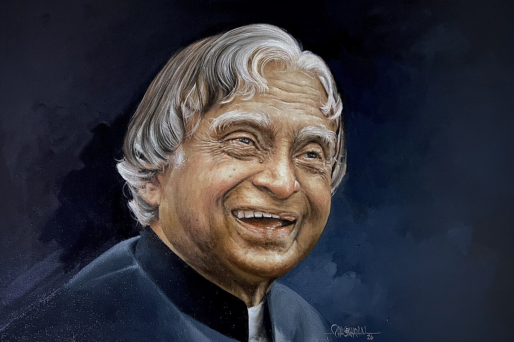

Missile Man of India & Former President

Dr. A. P. J. Abdul Kalam was one of India's most respected scientists and leaders. He played an important role in the development of India's missile and space programmes. His dedication, simplicity, and love for learning inspired millions of people across the world.
Born in Rameswaram, Tamil Nadu, he came from a humble background but achieved extraordinary success through hard work, discipline, and determination. His journey is a symbol of perseverance and self-belief.
As the 11th President of India, he became known as the "People's President." He always encouraged students to dream big, work hard, and contribute to the nation's development.
Even after completing his presidency, he continued teaching, writing books, and motivating young minds. His legacy continues to inspire future generations.
"Dream, Dream, Dream. Dreams transform into thoughts and thoughts result in action."
— Dr. A. P. J. Abdul Kalam